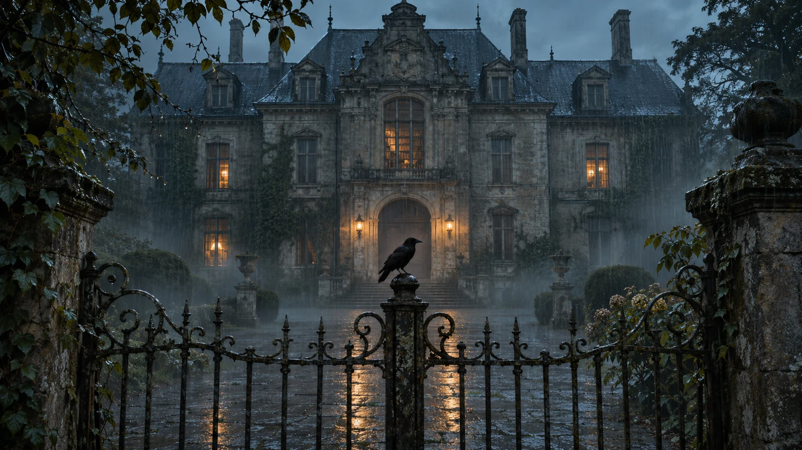

THE MANOR
القصر تحت المطر

حجر مبتل، سماء رمادية، ودفء يتسلل من النوافذ.

دراسة بصرية — المجموعة الأولى
مطرٌ بارد. ضوءٌ خافت. وتفاصيل تستحق
أن تقترب منها.
01 — MOTION STUDY
أربع صور، بحركة كاميرا هادئة وانتقالات ناعمة.
مع أجواء صوتية
أصلية مستوحاة من المطر.
02 — THE STILL COLLECTION
إضاءة موحّدة. خامات واقعية. تفاصيل سينمائية.
افتح أي مشهد
لمشاهدته بالحجم الكامل.
03 — TAKE IT WITH YOU
الأصول الأصلية والفيلم بنسختيه، محفوظة معًا في حزمة واحدة.
تحميل الحزمة الكاملة